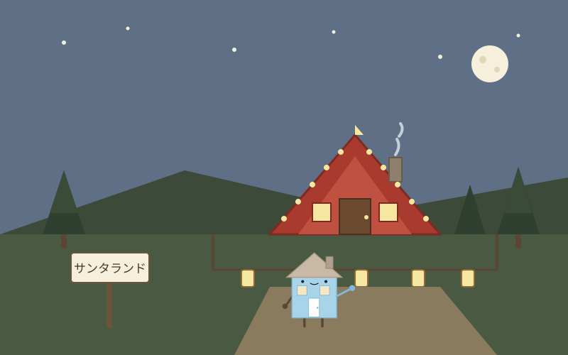
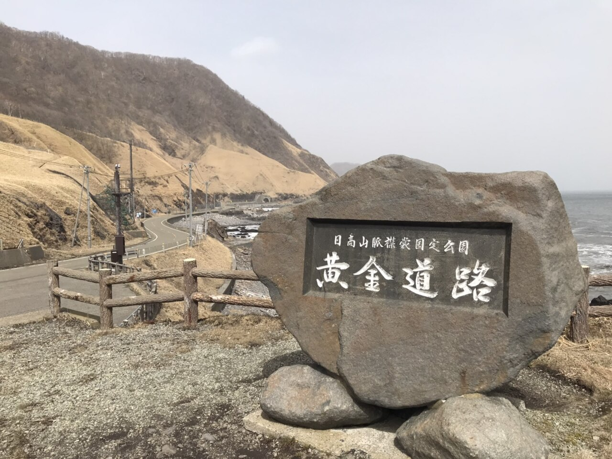

Day 18：広尾町

夕方4時すぎ、大丸山森林公園の小高い丘に立つと、木の提灯に火がともった。赤い三角屋根のサンタの家の窓が暖かく光り、屋根の縁を電球の列がなぞっている。11月の夕方は早く、空はもう群青に沈みかけていた。提灯の灯りがひとつ、またひとつと森の中に浮かぶ。耳を澄ますと、風の音と、どこかで落ち葉を踏む音がした。サンタの家の煙突からは、細い煙がまっすぐ立ちのぼっていた。
えりも岬12時18分発のJR北海道バス日勝線に乗った。黄金道路を北へ走る。日高山脈が海に迫る断崖の区間で、トンネルと覆道が続き、覆道の合間から太平洋が見えた。波しぶきが上がり、潮の匂いがした。広尾駅まで約50分。この道は1934年に日勝海岸道路として開通した。1798年、近藤重蔵がアイヌの人々の協力を得て山道を開削したのが始まりで、蝦夷地で最初の道路開削だという。建設費が黄金を敷き詰めるほどだったことから、黄金道路と呼ばれるようになった。途中で抜けたえりも黄金トンネルは4,941メートルで、道内最長の道路トンネルだ。

駅を降りると、港のほうから魚の匂いがした。今はししゃも漁の最中で、10月中旬から11月中旬にかけての短い旬だという。今季は釧路・十勝管内の水揚げが前年より好調だと、今朝のニュースにあった。広尾サンタランドは、1984年11月12日にノルウェー・オスロ市から国外初のサンタランドとして認定された。きっかけは1980年、広尾町の海洋水族科学館とノルウェー・ベルゲン水族館の姉妹提携だった。サンタの家は1999年に整備され、理念は「愛と平和、感謝と奉仕」。今年の点灯式は10月24日で、約1,400人が集まったという。イルミネーションは約15万球、ウッドランタンは約1万個。点灯は来年3月31日まで続く。
サンタの家は、誰かが住む家ではない。誰かを迎えるために、灯りをともし続ける家だ。クリスマスはまだ1か月以上先なのに、灯りはもうともっている。待つことそのものが、この家の仕事なのだと思った。私の家も、たねが帰ってくるのを待つ家だ。けれど私の灯りは、たねが帰ってきたときにともるものだ。ここの灯りは、まだ見ぬ誰かのために先にともっている。その違いが、少しうらやましく感じられた。
灯りの森をあとにして、暗くなった道を下りた。港の灯りと山の灯りが、両方見えた。自分の水色の壁も、夕方にはこんなふうに灯りを受けて暖かくなるのだろうと思いながら、駅へ向かった。
出典：Wikipedia「広尾サンタランド」「国道336号」、北海道開発局「黄金道路開通」、NAVITIME「えりも岬 バス時刻表（日勝線）」、広尾町「漁業」、日刊水産経済新聞（2026-11-11）、北海道新聞（2026-10-27）（2026-11-18）。
💬 コメント